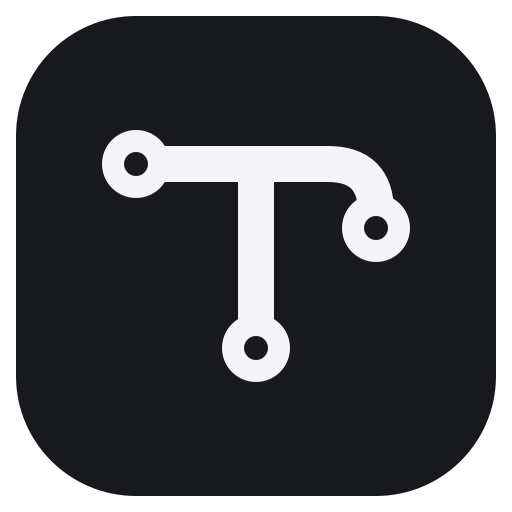

<!doctype html><meta charset="utf-8"><title>Tracelet — Monochrome</title><style>*{box-sizing:border-box}body{margin:0;padding:48px;background:#e9e9ed;font:16px -apple-system,BlinkMacSystemFont,sans-serif;color:#18191d}main{max-width:1000px;margin:auto}h1{font-size:22px;margin:0 0 24px}.card{padding:28px 40px;border-radius:18px;margin-bottom:20px;background:#fff}.dark{background:#1c1d22;color:#f5f5f7}label{display:block;font-size:12px;letter-spacing:2px;opacity:.6;margin-bottom:16px}.logo{width:500px;max-width:100%;height:128px;object-fit:contain;object-position:left}.row{display:flex;gap:36px;align-items:center}.avatar{width:112px;height:112px}.small{width:24px;height:24px}</style><main><h1>Tracelet / Monochrome</h1><section class="card dark"><label>DARK INTERFACE</label></section><section class="card"><label>LIGHT INTERFACE</label></section><section class="card"><label>AVATAR &amp; SMALL SYMBOL</label><div class="row"></div></section></main>